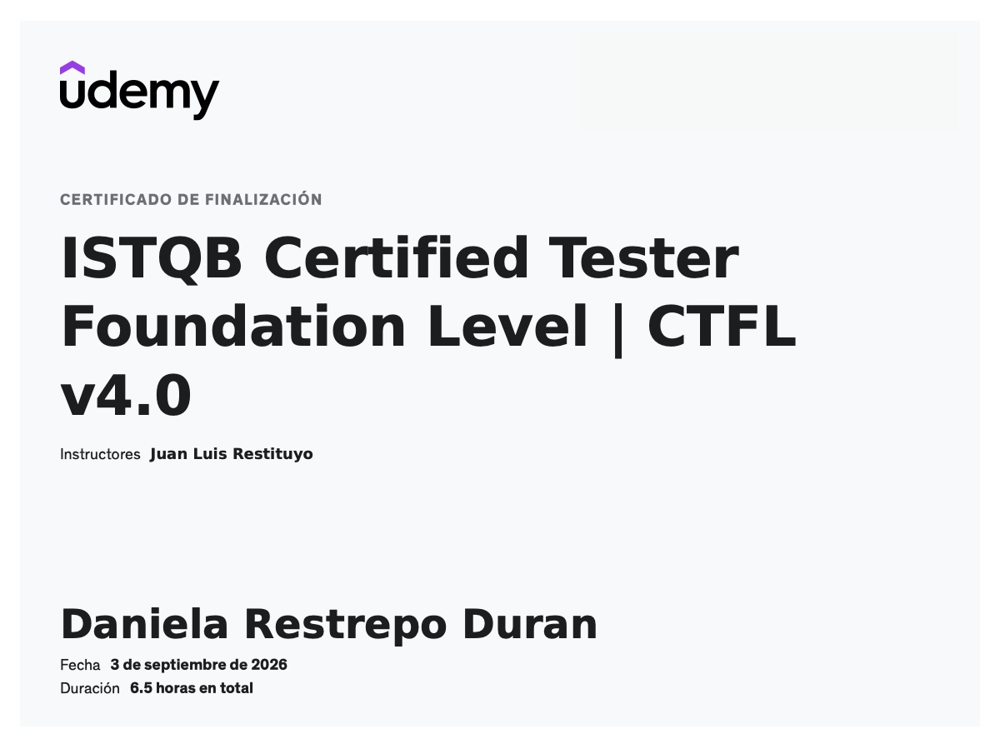
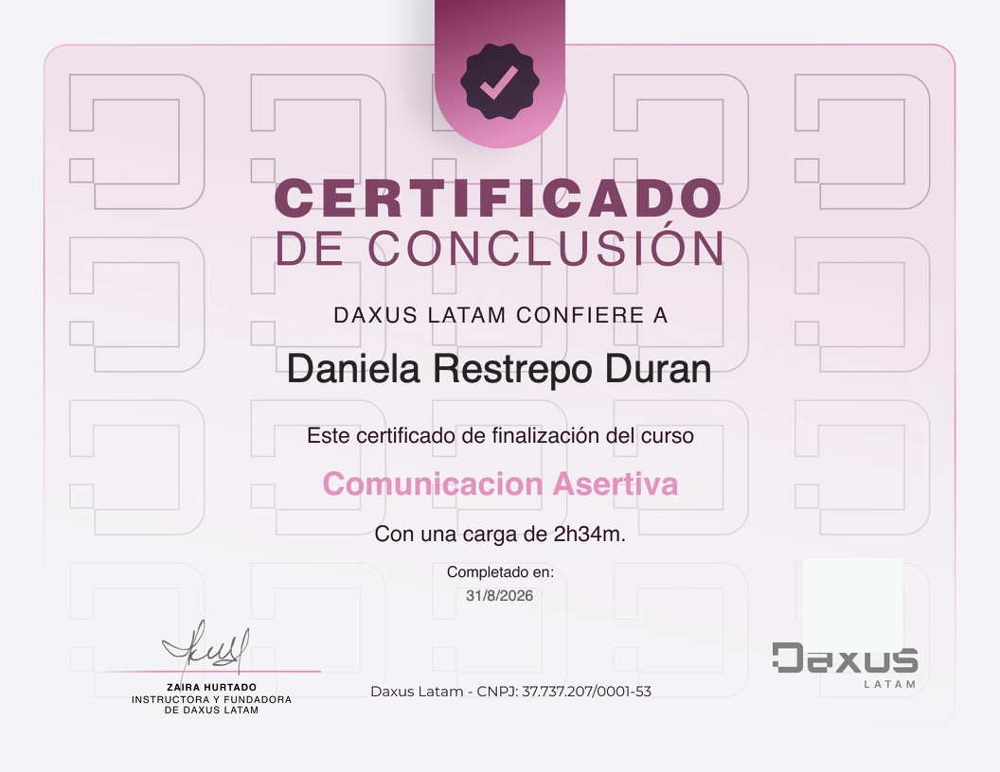
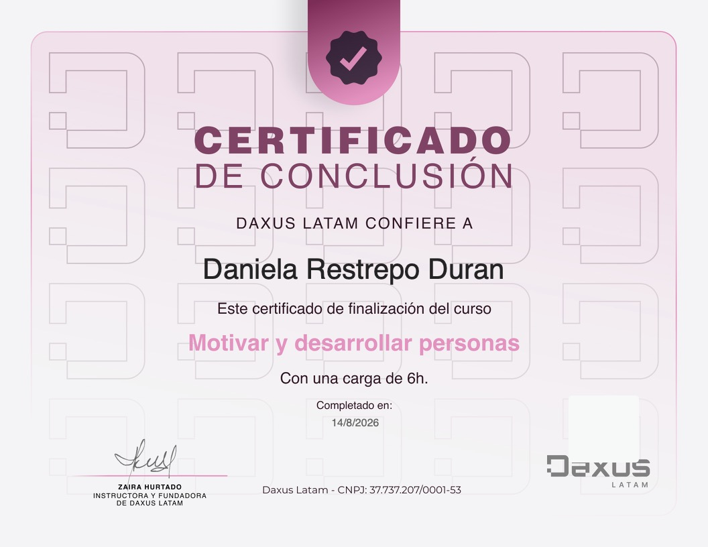
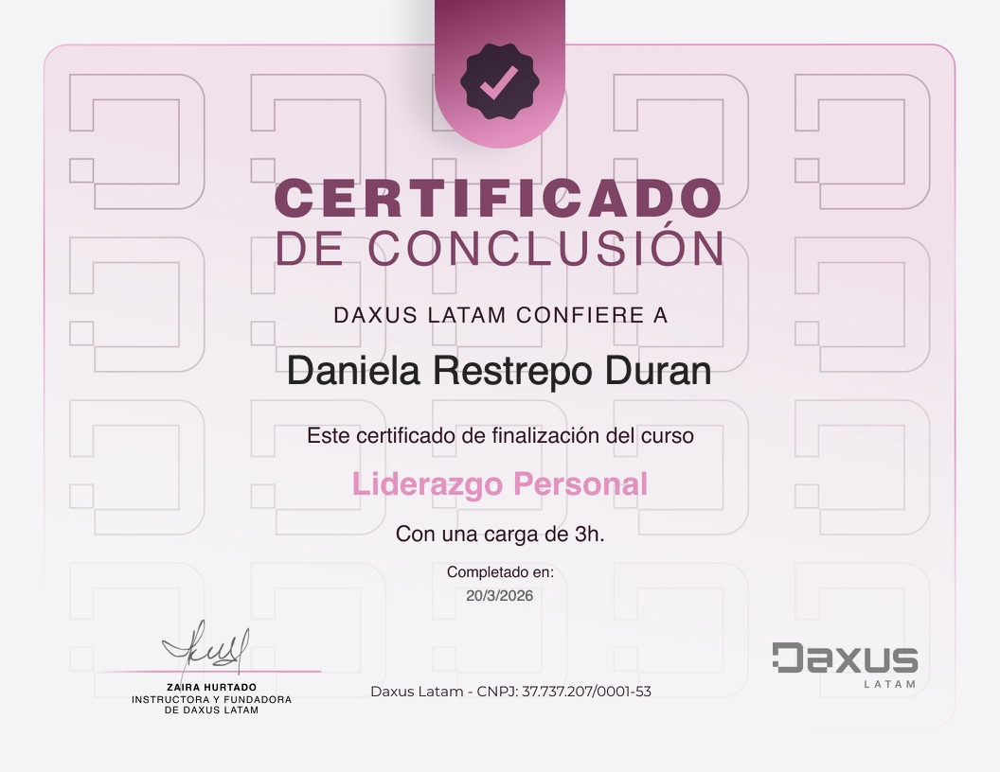
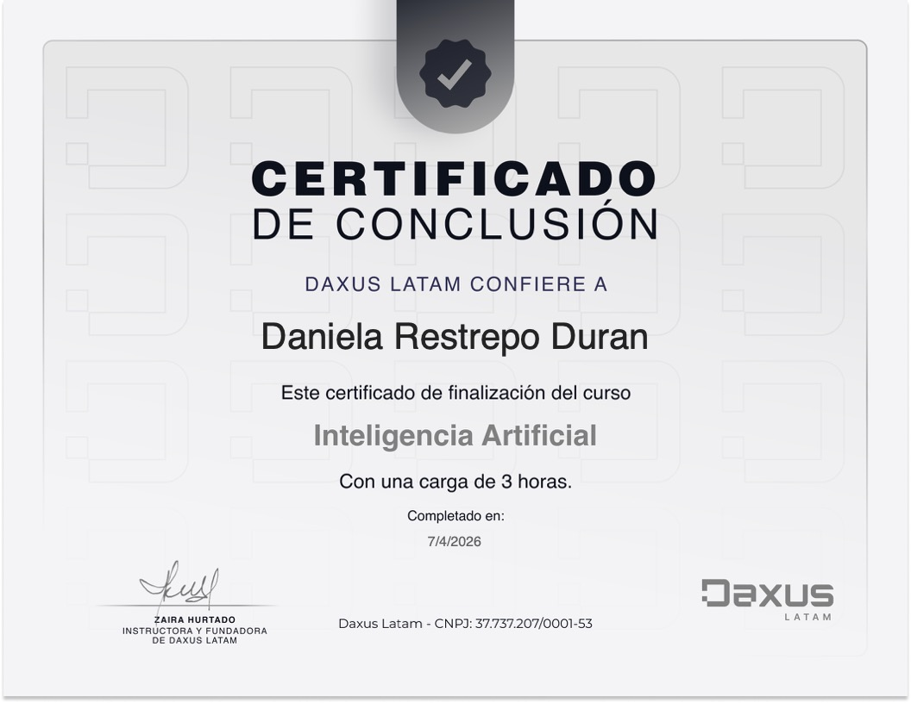

Visión de producto
Entender el objetivo antes de diseñar la prueba.
QA Lead · Software Quality Assurance
Soy Daniela Restrepo Durán. Lidero procesos de calidad para productos web y mobile, conectando estrategia, equipos y pruebas para entregar experiencias confiables.
01 · Sobre mí
Profesional de calidad de software con más de seis años de experiencia en aseguramiento de calidad, liderazgo y acompañamiento a equipos ágiles.
He trabajado en la validación de productos web y mobile, definición de estrategias de prueba, gestión de defectos y seguimiento de la calidad durante todo el ciclo de desarrollo. Me enfoco en hacer visible el riesgo, facilitar decisiones y promover una cultura de calidad compartida.
Entender el objetivo antes de diseñar la prueba.
Convertir hallazgos en decisiones accionables.
Aprender, medir y fortalecer cada entrega.
02 · Habilidades y herramientas
Capacidades para planear, ejecutar y liderar procesos de aseguramiento de calidad.
Liderazgo
Planeación de pruebas, análisis de riesgos, definición de alcance, seguimiento y coordinación de equipos.
Validación
Diseño y ejecución de pruebas funcionales, regresión, integración y pruebas exploratorias.
Servicios
Validación de servicios, contratos, respuestas y escenarios de integración con Postman.
Gestión
Registro, priorización, trazabilidad y seguimiento de defectos con equipos multidisciplinarios.
Aprendizaje
Fortaleciendo conocimientos y construyendo ejercicios prácticos de automatización de pruebas.
Metodología
Colaboración cercana con producto y desarrollo dentro de ciclos de entrega ágiles.
03 · Proyectos
Proyectos demostrativos que documentarán el proceso, las decisiones y los resultados.
Plan de pruebas end-to-end con análisis de riesgos, escenarios críticos, casos de prueba, defectos y reporte de resultados.
Validación de endpoints, datos, códigos de respuesta y flujos negativos con documentación clara.
Proyecto de aprendizaje para llevar escenarios funcionales a una suite mantenible y documentada.
Este portafolio crecerá con repositorios y documentación propios. Los proyectos se publicarán a medida que estén listos.
04 · Certificados y formación
Formación continua para fortalecer mis conocimientos y evolucionar profesionalmente en calidad de software.

Ver PDF ↗Udemy · 2026

Ver PDF ↗Daxus Latam · 2026

Ver PDF ↗Daxus Latam · 2026

Ver PDF ↗Daxus Latam · 2026

Ver PDF ↗Daxus Latam · 2026
Próximo objetivo
Formación continua
05 · Contacto
Estoy abierta a conectar con equipos y profesionales interesados en calidad de software, liderazgo QA y mejora continua.
Contacto profesional.